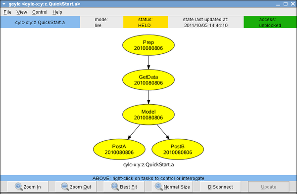

|
|
This section works through some basic cylc functionality using the “QuickStart” example suites, which you can import to your suite database by running the cylc admin import-examples command and then reregistering the top level suite name to “examples” as described in Section 4.4. You should end up with the following QuickStart suites (but the directory paths on the right are up to you):
Cylc suites are defined by suite.rc files, discussed at length in Suite Definition (Section 8) and the Suite.rc Reference (Appendix A). To view the examples.QuickStart.a suite definition right-click on the suite name and choose ‘Edit’; or use the edit command:
This opens the suite definition in your editor (configured in the cylc site or user config file - see Section 4.3) from the suite definition directory so that you can easily open other suite files in the editor. You can of course do this manually, but by using the cylc interface you don’t have to remember suite directory locations. If you do need to move to a suite definition directory, you can do this:
Suites that use include-files can optionally be edited in a temporarily inlined state - the inlined file gets split back into its constituent include-files when you save it and exit the editor. While editing, the inlined file becomes the official suite definition so that changes take effect whenever you save the file.
Anyhow, you should now see the following suite.rc file in your editor:
Cylc comes with syntax highlighting and section folding for the vim editor, and an emacs font-lock mode - see Section 8.2.3.
title = "Quick Start Example A"
description = "(see the Cylc User Guide)"
[scheduling]
initial cycle time = 2011010106
final cycle time = 2011010200
runahead limit = 12
[[special tasks]]
start-up = Prep
clock-triggered = GetData(1)
[[dependencies]]
[[[0,6,12,18]]]
graph = """Prep => GetData => Model => PostA
Model[T-6] => Model"""
[[[6,18]]]
graph = "Model => PostB"
[visualization] # optional
[[node groups]]
post = PostA, PostB
[[node attributes]]
post = "color=blue", "shape=rectangle"
PostB = "style=filled", "fillcolor=seagreen2"
Model = "style=filled", "fillcolor=red"
GetData = "style=filled", "fillcolor=yellow3", "shape=septagon"
Prep = "shape=box", "style=bold", "color=red3"
This defines a complete, valid, runnable suite. Here’s how to interpret it: At 0, 6, 12, and 18 hours each day a clock-triggered task called GetData triggers 1 hour after the wall clock reaches its (GetData’s) nominal cycle time; then a task called Model triggers when GetData finishes; and a task called PostA triggers when Model is finished. Additionally, Model depends on its own previous instance from 6 hours earlier; and twice per day at 6 and 18 hours another task called PostB also triggers off Model.
All the tasks in this suite can run in parallel with their own previous instances if the opportunity arises (i.e. if their prerequisites are satisfied before the previous instance is finished). Most tasks should be capable of this (see Section 14.4) but if necessary you can force particular tasks to run sequentially like this:
Finally, when the suite is cold-started (started from scratch) it is made to wait on a special synchronous start-up task called Prep. Start-up tasks are one-off (non-spawning) tasks that are only used at suite start-up, and any dependence on them only applies at suite start-up. They cannot be used in conditional trigger expressions with normal cycling tasks, because the trigger becomes undefined in subsequent cycles. Start-up tasks are synchronous because they have a defined cycle time even though they are not cycling tasks. Cylc also has asynchronous one-off tasks, which have no cycle time:
The optional visualization section configures graph plotting.
Open the examples.QuickStart.a suite gcylc and graph it using the “Suite” menu; or by command line,
This will pop up a zoomable, pannable, graph viewer showing the graph of Figure 15.
Each cylc task defines command scripting to invoke the right external processing when the task is ready to run. This has not been explicilty configured in the example suite, so it defaults, for all tasks, to the dummy task scripting inherited from the root namespace (see Section 8):
The command arguments above reflect suite definition section nesting.
Now open the suite in gcylc and select Graph View in the top toolbar. You can also open other gcylc instances for the same suite at the same time if you like. Note that closing gcylc does not kill the suite that the GUI is currently connected to.
In gcylc click on Control → Run, enter an initial cold-start cycle time (e.g. 2011052306), and select “Hold (pause) on start-up” so that the suite will start in the held state (tasks will not be submitted even if they are ready to run).
Do not choose an initial cycle time in the future unless you’re running in simulation mode, or nothing much will happen until that time.
If the initial cycle time ends in 06 or 18 the suite controller should look like Figure 16, or otherwise (00 or 12) like Figure 17.
|

|
The reason for the difference in graph structure between the two figures is this: cylc starts up with every task present in the waiting state (blue) at the initial cycle time or at the first subsequent valid cycle time for the task - and PostB does not run at 00 or 12. The greyed out tasks are from the base graph, defined in the suite.rc file, and aren’t actually present in the suite as yet (they are shown in the graph in order to put the live tasks in context).
Now, select Control → Release in gcylc to release the hold on the suite and observe what happens: the GetData tasks will rapidly go off in parallel out to a few cycles ahead (how far ahead depends on the suite runahead limit as explained below and in The Suite Runahead Limit, Section 11.11.1) and then the suite will stall, as shown in Figures 18 and 19.
|
|
|
|
The Prep task runs immediately because it has no prerequisites and is not clock-triggered. The clock-triggered GetData tasks then all go off at once because they have no prerequisites (i.e. they do not have to wait on any upstream tasks), their trigger time has long passed (the initial cycle time was in the past), and they are not sequential tasks (so they are able to run in parallel - try declaring GetData sequential to see the difference). Beyond the suite runahead limit which is set to 12 hours in this suite - see Section 11.11.1) GetData is put into a special ‘runahead’ held state indicated by the darker blue graph node. The task will be released from this state when the slower tasks have caught up sufficiently. The runahead limit is designed to stop quick tasks from running off too far into the future. It is typically of little consequence in real time operation when suites are typically constrained by clock triggered tasks.
If you’re wondering why a particular task has not triggered yet in a running suite you can view the current state of its prerequisites by right-clicking on the task and choosing ‘View State’, or using cylc show. Do this for the first Model task, which appears to be stuck in the waiting state; it will pop up a small window as in Figure 20.
|
|
It is clear that the reason the task is not running, and consequently, by virtue of the runahead limit, why the suite has stalled, is that Model[T] is waiting on Model[T-6] which does not exist at suite start-up. Model represents a warm-cycled forecast model that depends on a model background state or restart file(s) generated by its own previous run.
Right-click on the waiting Model task and choose Trigger, or use cylc trigger, to force the task to trigger and thereby get the suite up and running. In a real suite this would not be sufficient: the real forecast model that Model represents would fail for lack of the real restart files that it requires as input. We’ll see how to handle this properly shortly.
After watching the examples.QuickStart.a suite run for a while choose Stop from the Control menu, or cylc stop, to shut it down. The default stop method waits for any tasks that are currently running to finish before shutting the suite down, so that the final recorded suite state is perfectly consistent with what actually happened.
You can restart the suite from where it left off by choosing Control → Run and selecting the ‘restart’ option, or using cylc restart. Note that cylc always writes a special state dump, and logs its name, prior to actioning any intervention, and you can also restart a suite from one of these states, rather than the default most recent state.
Now take a look at examples.QuickStart.b, which is a minor modification of examples.QuickStart.a. Its suite.rc file has a new cold-start task called ColdModel,
and the dependency graph (see also Figure 21) looks like this:
In other words, Model[T] can trigger off either Model[T-6] or ColdModel[T].
Cold-start tasks are one-off tasks used in the first cycle to satisfy another task’s intercycle-cycle dependence at suite start-up (when there is no previous cycle to do it). For instance, a series of cold-start tasks may be used to cold-start a warm-cycled model. Unlike start-up tasks though, cold-start dependence is preserved in subsequent cycles, so they must generally appear in OR’d conditional triggers in order to avoid stalling the suite after the first cycle (as in this example). This means cold-start tasks can be inserted into a running suite, if necessary, to cold-start their associated tasks in case of problems that prevent continued normal warm cycling.
A cold-start task in a real suite may submit a real “cold start forecast”, or similar, to generate the previous-cycle input files required by the associated model, or it may just stand in for some external spinup process, or similar, that has to be completed before the suite is started (in the latter case the cold-start task would be a dummy task that just reports successful completion in order to satisfy the initial previous-cycle dependence of the model).
Run examples.QuickStart.b to confirm that that no manual triggering is required to get the suite started now.
The suite examples.QuickStart.c is the same as examples.QuickStart.b except that it has real task implementations (scripts located in the suite bin directory) that generate and consume files in such a way that they have to run according to the graph of Figure 21. The suite gets them to run together out of a common I/O workspace, configured via the suite.rc file.
By studying this suite and its tasks, and by making quick copies of it to modify and run, you should be able to learn a lot about how to build real cylc suites. Here’s the complete suite definition
And here is the complete implementation for the PostA task (located with the other task scripts in the suite bin directory):
title = "Quick Start Example C"
description = "(Quick Start b plus real tasks)"
# A clock-triggered data-gathering task, a warm-cycled model, and two
# post-processing tasks (one runs every second cycle). The tasks are not
# cylc-aware, have independently configured I/O directories, and abort
# if their input files do not exist. This suite gets them all to run out
# of a common I/O workspace (although the warm-cycled model uses a
# private running directory for its restart files).
[scheduling]
initial cycle time = 2011010106
final cycle time = 2011010200
[[special tasks]]
start-up = Prep
cold-start = ColdModel
clock-triggered = GetData(1)
[[dependencies]]
[[[0,6,12,18]]]
graph = """Prep => GetData & ColdModel
GetData => Model => PostA
ColdModel | Model[T-6] => Model"""
[[[6,18]]]
graph = "Model => PostB"
[runtime]
[[root]]
[[[environment]]]
TASK_EXE_SECONDS = 5
WORKSPACE = /tmp/$USER/$CYLC_SUITE_REG_NAME/common
[[Prep]]
description = "prepare the suite workspace for a new run"
command scripting = clean-workspace.sh $WORKSPACE
[[GetData]]
description = "retrieve data for the current cycle time"
command scripting = GetData.sh
[[[environment]]]
GETDATA_OUTPUT_DIR = $WORKSPACE
[[Models]]
[[[environment]]]
MODEL_INPUT_DIR = $WORKSPACE
MODEL_OUTPUT_DIR = $WORKSPACE
MODEL_RUNNING_DIR = $WORKSPACE/Model
[[ColdModel]]
inherit = Models
description = "cold start the forecast model"
command scripting = Model.sh --coldstart
[[Model]]
inherit = Models
description = "the forecast model"
command scripting = Model.sh
[[Post]]
description = "post processing for model"
[[[environment]]]
INPUT_DIR = $WORKSPACE
OUTPUT_DIR = $WORKSPACE
[[PostA,PostB]]
inherit = Post
command scripting = ${CYLC_TASK_NAME}.sh
[visualization]
default node attributes = "shape=ellipse"
[[node attributes]]
Post = "color=blue", "shape=rectangle"
PostB = "style=filled", "fillcolor=seagreen2"
Models = "style=filled", "fillcolor=red"
ColdModel = "fillcolor=lightblue"
GetData = "style=filled", "fillcolor=yellow", "shape=septagon"
Prep = "shape=box", "style=bold", "color=red3"
#!/bin/bash
set -e
cylc checkvars TASK_EXE_SECONDS
cylc checkvars -d INPUT_DIR
cylc checkvars -c OUTPUT_DIR
# CHECK INPUT FILES EXIST
PRE=$INPUT_DIR/surface-winds-${CYLC_TASK_CYCLE_TIME}.nc
if [[ ! -f $PRE ]]; then
echo "ERROR, file not found $PRE" >&2
exit 1
fi
echo "Hello from $CYLC_TASK_NAME at $CYLC_TASK_CYCLE_TIME in $CYLC_SUITE_REG_NAME"
sleep $TASK_EXE_SECONDS
# generate outputs
touch $OUTPUT_DIR/surface-wind.products
Cylc writes some information, including warnings and errors, to the stdout and stderr streams. In debug mode or non-daemon mode this is directed to the terminal; otherwise it goes to log files under the suite run directory. The event log, which records timestamped events as the suite runs, is written to same location.
Figure 22 shows a suite log viewed from gcylc. The cylc log command also prints the suite event, stdout, and stderr logs, with optionally filtering of the event log for specific tasks.
The stdout and stderr streams from task job scripts also end up under the suite run directory.
The location of the suite run directory is determined by site/user config files and defaults to $HOME/cylc-run/SUITE.
If you have read access to another user’s account (even on another host) it is possible to use cylc monitor to look at their suite’s progress without full shell access to their account. To do this, you will need to copy their suite passphrase to
(use of the host and owner names is optional here - Section 11.5.1) and also retrieve the port number of the running suite, which can be found in their account:
Once you have this information, you can run
to view the progress of their suite.
Other suite-connecting commands work in the same way too; see Section 11.9.
The cylc suite search tool reports matches in the suite.rc file by line number, suite section, and file, even if include-files are used (and even if they are nested), and by file and line number for matches in the suite bin directory. The following output listing is from a search of the examples.QuickStart.c suite.
(Suite search is also available from the gcylc Suite menu).
The cylc diff command compares suites and reports differences by suite.rc section and item. Note that some differences may be due to suite-name-specific defaults that are not explicitly configured in either suite.
Suite validation checks for errors by parsing the suite definition, comparing all items against the suite.rc specification file, and then parsing the suite graph and attempting to instantiate all task proxy objects. This can be done using the cylc GUIs or cylc validate:
For more information on suite validation see Section 8.2.5.
Cylc has been designed from the ground up to make prototyping and testing new suites very easy. Simply drawing (in text) a dependency graph in a new suite definition creates a valid suite that you can run: the tasks will be dummy tasks that default to emitting an identifying message, sleeping for a few seconds, and then exiting; but you can then arrange for particular tasks to do more complex things by configuring their runtime properties appropriately.
Cylc has example suites intended to illustrate most facets of suite construction. These are held centrally under $CYLC_DIR/examples and can be imported to your suite database by running ’cylc admin import-examples’. They all run “out the box” and can be copied and modified by users to test almost anything. Some of them just configure a suite dependency graph, in which case cylc will run dummy tasks according to the graph; some also configure task runtime properties (e.g. command scripting and environment variables) within the suite definition; and some have real task implementations that generate and consume real files and which will fail if they are not executed in the right order. All of the example suites are portable in the sense that all suite and task I/O directory paths incorporate the suite name (this is the default situation for any cylc suite in fact) so you can run multiple copies of the same suite at once without any interference between them.
(This suite is explained in the Quick Start Guide, Section 6).
title = "Quick Start Example Z"
description = "(Example A without the visualization config)"
[scheduling]
initial cycle time = 2011010106
final cycle time = 2011010200
[[special tasks]]
start-up = Prep
clock-triggered = GetData(1)
[[dependencies]]
[[[0,6,12,18]]]
graph = """Prep => GetData => Model => PostA
Model[T-6] => Model"""
[[[6,18]]]
graph = "Model => PostB"
When running a suite in live mode that contains clock-triggered tasks do not give an initial cycle time in the future or nothing will happen until that time. However, you can also run any suite in simulation mode or dummy mode in which case a future start time is fine (see Appendix 11.18).